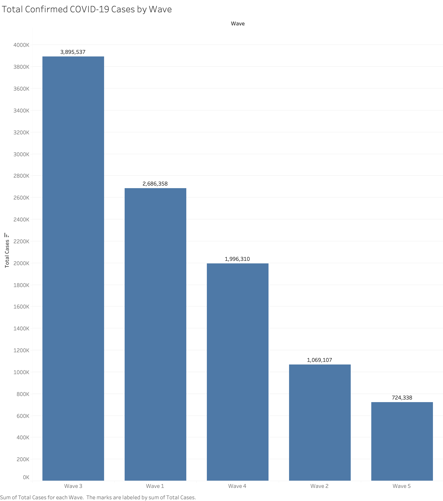
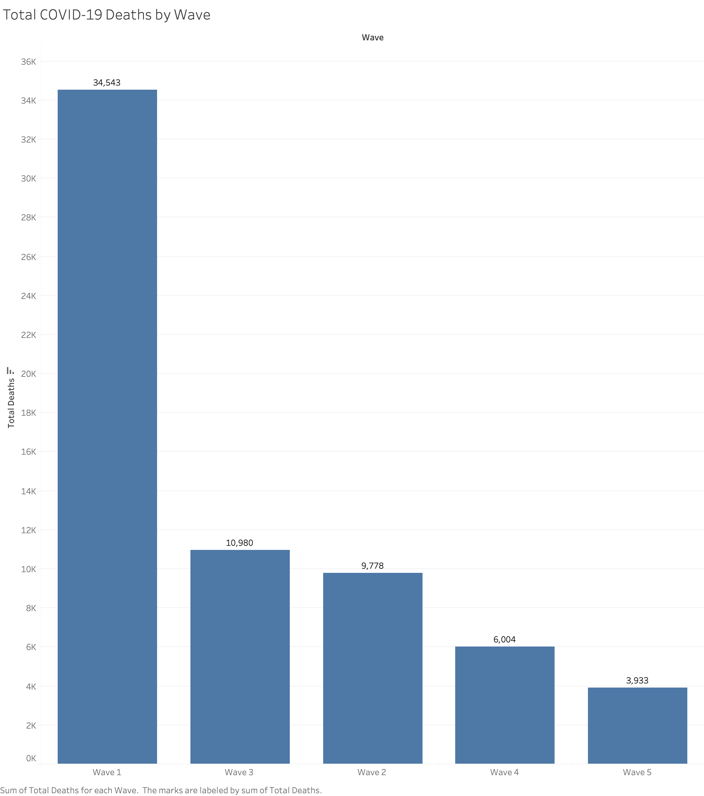
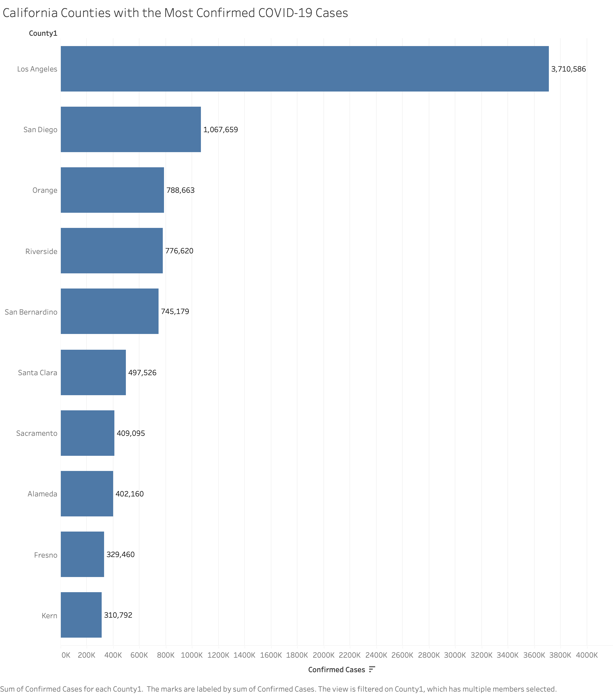
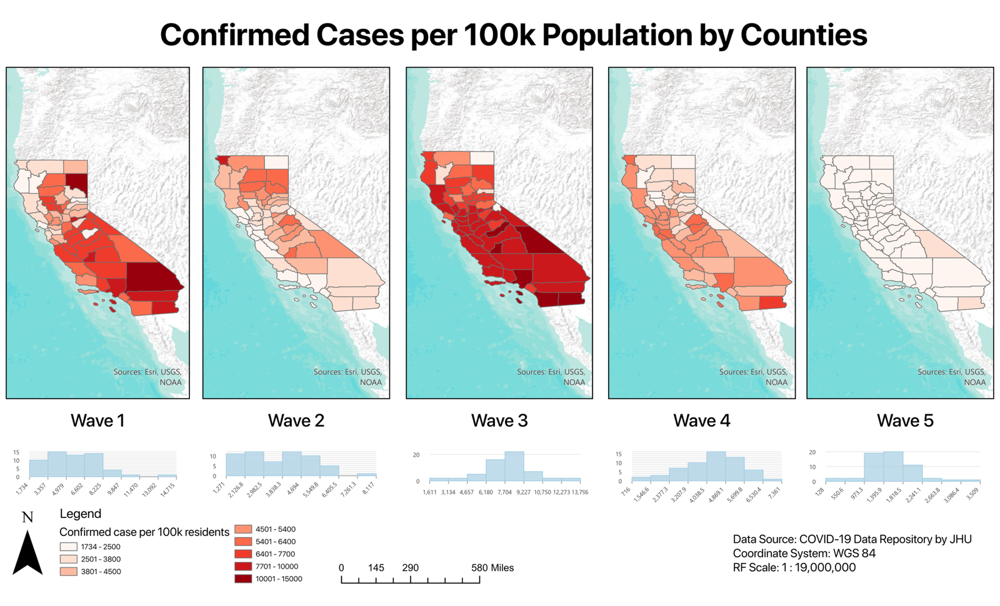
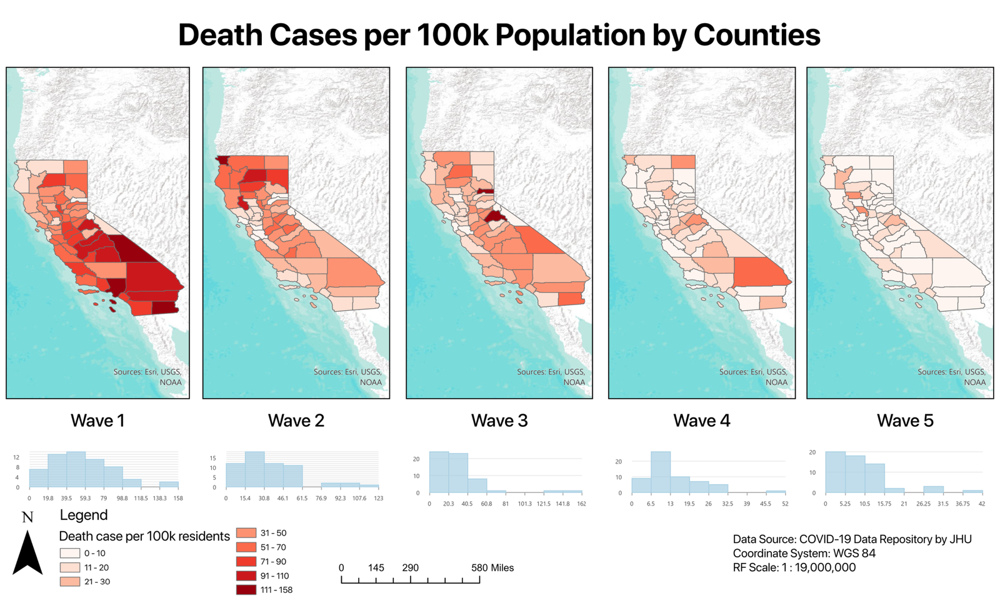
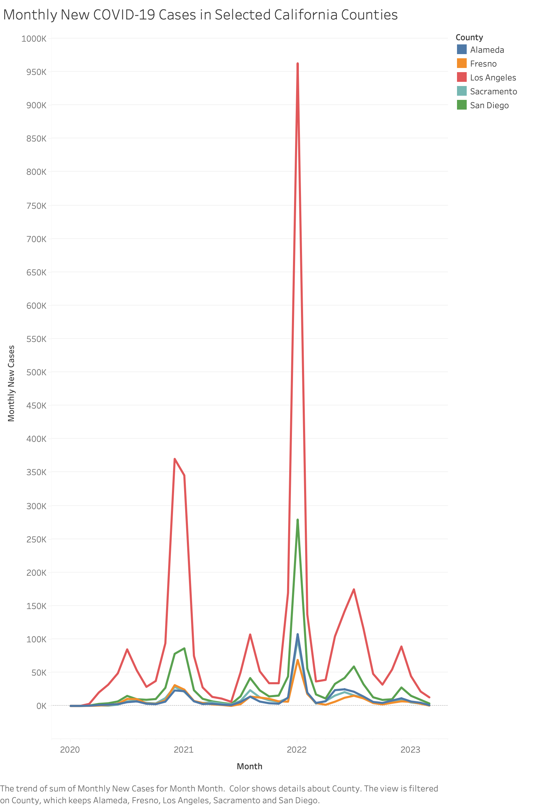

How the severity and geographic distribution of COVID-19 changed across California — and why cases alone cannot explain the crisis.
DH 101 · SUMMER 2026|JOHNS HOPKINS CSSE DATA
On January 16, 2022, California reported 207,110 confirmed COVID-19 cases in a single day, the highest daily case total among the five major pandemic waves identified in our dataset. Yet this wave did not produce the greatest number of deaths. The first major wave, which lasted from November 2020 through February 2021, reached a much lower peak of 57,467 daily cases but resulted in 34,543 total deaths. By comparison, the third wave, which included the record-setting January 2022 peak, produced nearly 3.9 million confirmed cases but 10,980 deaths. This contrast shows that the relationship between reported infections and deaths changed significantly over the course of the pandemic.
To investigate these changing patterns, our project uses the COVID-19 Data Repository created by the Center for Systems Science and Engineering at Johns Hopkins University. The repository supported the Johns Hopkins COVID-19 Dashboard and includes confirmed cases and deaths organized by date and geographic location. Johns Hopkins combined information from international health organizations, national and local governments, public health departments, and public tracking projects rather than collecting all of the data through one unified system. This structure makes comparisons across time and place possible, but it also means that the data depends on differences in testing, reporting practices, transparency, and institutional capacity.
This project examines how the severity and geographic distribution of COVID-19 changed across California over time. Through visualizations of pandemic waves, county case totals, monthly trends, and geographic patterns, we argue that the effects of COVID-19 cannot be understood through case counts alone. The changing relationship between cases and deaths, as well as the uneven outcomes among counties, suggests that pandemic severity was shaped by time, place, healthcare access, reporting systems, and broader social conditions. At the same time, the dataset represents the pandemic mainly through countable categories such as cases, deaths, dates, and locations. These categories reveal important patterns, but they cannot fully represent the lived experiences of the people and communities behind the numbers.
Existing Research on Unequal COVID-19 Outcomes
Researchers have consistently found that the severity of COVID-19 cannot be explained by public health restrictions alone. Although governments adopted policies such as lockdowns, masking requirements, travel restrictions, and social distancing rules, similar policies often produced different outcomes across places. Existing research suggests that the effectiveness of these measures depended on wider cultural, political, institutional, and social conditions.
In “Culture and Political Regimes: How Have They Influenced the Effectiveness of COVID-19 Response Policy?,” Peizhen Wu and Zhen Sun examine emergency response policies implemented across countries on five continents. They conclude that these policies generally reduced the effects of COVID-19, but their success varied significantly. Their findings suggest that government action must be understood in relation to political systems, governance, and cultural conditions. Adopting the same policy in two places does not guarantee the same result because institutions differ in their ability to enforce measures and populations differ in their ability or willingness to follow them.
Research discussed by the Harvard T.H. Chan School of Public Health similarly examines why countries experienced very different death rates despite using comparable policies. It found that lower mortality was often associated with places where governments and residents more readily adopted and followed measures intended to reduce transmission. This suggests that written policy alone does not determine outcomes. Public trust, communication, institutional cooperation, and compliance also shape whether a public health response succeeds.
Donya Brown, Martina Dattilo, and James Rockey expand this discussion by examining international differences in excess mortality, which measures deaths above the number normally expected rather than relying only on deaths officially classified as caused by COVID-19. They identify the strength of the rule of law as an important factor associated with limiting mortality and also consider environmental and geographic conditions. Their work reinforces the idea that pandemic outcomes emerged from several interacting forces rather than from a single policy or characteristic.
Together, these studies provide a framework for analyzing California. Counties across the state were subject to many of the same statewide policies, yet they did not experience identical case totals, death totals, or pandemic waves. Our project therefore examines variation within one state rather than only differences between countries. We argue that statewide policy provides only part of the explanation. Local conditions, healthcare access, population vulnerability, institutional capacity, reporting practices, and public responses may also have shaped why some counties were affected more severely than others. Because our dataset does not directly measure many of these factors, however, our visualizations can reveal patterns and inequalities without proving their exact causes.
Changing Relationships Between Cases and Deaths Across Pandemic Waves
The first visualization compares confirmed COVID-19 cases and deaths over time in California. The charts present totals across the five major waves from the beginning of the pandemic through early 2023, allowing the waves to be compared by timing, size, and severity. Viewing these measures together is important because the number of infections alone does not fully indicate the human impact of a wave.

Fig. 1 — Total confirmed COVID-19 cases by wave. Source: Johns Hopkins CSSE COVID-19 Data Repository.

Fig. 2 — Total COVID-19 deaths by wave. Source: Johns Hopkins CSSE COVID-19 Data Repository.
FIG. 3 — FIVE MAJOR WAVES2020 — 2023
{{ ev.date }}
{{ ev.title }}
{{ ev.body }}
Fig. 3 — Timeline of California’s five major pandemic waves, drawn from the project dataset.
Wave 1 lasted from November 1, 2020, through February 28, 2021. During this period, California recorded approximately 2.69 million confirmed cases and 34,543 deaths. Daily cases peaked at 57,467 on December 31, 2020, while daily deaths peaked at 1,163 on February 24, 2021. The difference between these dates shows that mortality did not immediately rise and fall with infections. Deaths continued to increase after cases had peaked, reflecting the delay between infection, severe illness, and death.
Wave 3, which lasted from December 1, 2021, through February 28, 2022, followed a different pattern. It produced nearly 3.9 million confirmed cases, the highest total of the five waves, and reached a record peak of 207,110 cases on January 16, 2022. Despite this enormous increase, the wave resulted in 10,980 deaths, less than one-third of the total recorded during Wave 1. Its highest daily death count was 406, also substantially below the first wave’s peak.
This contrast is one of the project’s most important findings. Wave 3 had about 1.45 times as many total cases as Wave 1, but Wave 1 had more than three times as many deaths. Cases and deaths therefore did not rise in a constant proportion throughout the pandemic. The severity of a wave cannot be measured only by how many people tested positive.
The later waves continued the broader pattern of lower mortality relative to reported infections. Wave 4 produced nearly two million cases but 6,004 deaths, while Wave 5 resulted in 724,338 cases and 3,933 deaths. Average daily deaths fell from approximately 287.9 during Wave 1 to 39.2 during Wave 4 and 32.8 during Wave 5. However, later waves were not harmless. They still produced hospitalizations, long-term illness, missed work, educational disruption, and emotional distress that are not captured by death totals.
The changing relationship between cases and deaths may reflect vaccination, prior immunity, improved treatment, changes in circulating variants, or differences in which populations became infected. The visualization itself cannot determine which factors caused the decline in mortality. The dataset records dates, cases, and deaths, but it does not consistently include vaccination status, treatment, age, occupation, disability, race, income, or access to healthcare. The chart therefore reveals a changing pattern without fully explaining the medical and social processes behind it.
This limitation is central to the project’s humanistic interpretation. The lines in the visualization make the pandemic appear as a sequence of peaks, yet every rise represents illness, disruption, and loss within real communities. Cases reveal the scale of reported transmission, while deaths reveal only one form of harm. Both measures must be interpreted within their historical and social context.
Geographic Concentration of Confirmed Cases Across California Counties
After comparing the major waves, the next set of visualizations shifts from time to geography. The county-level bar chart shows the ten California counties with the highest cumulative numbers of confirmed cases through March 9, 2023. Los Angeles County recorded by far the largest total, with 3,710,586 confirmed cases. San Diego County ranked second with 1,067,659 cases, followed by Orange County with 788,663, Riverside County with 776,620, and San Bernardino County with 745,179. The remaining counties shown were Santa Clara, Sacramento, Alameda, Fresno, and Kern.

Fig. 4 — California counties with the most confirmed COVID-19 cases through March 9, 2023. Source: Johns Hopkins CSSE.
Los Angeles County’s total is the most visible feature of the chart. It recorded more than three times as many cases as San Diego County and nearly five times as many as Orange County. However, this does not mean that an individual living in Los Angeles County faced the greatest risk of infection. The visualization presents raw totals rather than rates adjusted for population. Because Los Angeles is the most populous county in California, its population contributed substantially to its large total. The chart measures where the greatest number of reported infections accumulated, not the proportion of residents who became infected.
Even with this limitation, the visualization shows that much of California’s reported case burden was concentrated in highly populated urban and metropolitan counties. Los Angeles, San Diego, Orange, Riverside, and San Bernardino are all located in Southern California and contain major population centers. Alameda and Santa Clara represent the Bay Area, while Fresno, Sacramento, and Kern reflect large population centers in the Central Valley and state capital region. Population size, urban density, employment patterns, transportation networks, and regional mobility may all have influenced where cases were recorded, although the chart cannot independently prove these causes.
At the same time, the lighter appearance of rural and less populated counties on a raw-count map should not be interpreted as evidence that they experienced only minor effects. A county with fewer residents will usually produce a smaller raw total even if a large share of its population becomes infected. Rate-based maps using cases and deaths per 100,000 residents therefore offer a different geographic pattern — one that makes intensity more comparable across counties of different sizes.

Fig. 5 — Confirmed COVID-19 cases per 100,000 residents by California county across five pandemic waves. Source: Johns Hopkins CSSE; map by the authors.

Fig. 6 — COVID-19 deaths per 100,000 residents by California county across five pandemic waves. Source: Johns Hopkins CSSE; map by the authors.
The monthly line chart adds a temporal dimension by tracking new cases in Alameda, Fresno, Los Angeles, Sacramento, and San Diego counties. All five counties experienced repeated increases and declines, but the size of their peaks differed. Los Angeles consistently recorded the highest monthly totals, including a dramatic peak near the beginning of 2022 that exceeded 950,000 new cases in one month. San Diego also experienced a large increase during this period, reaching approximately 280,000 monthly cases, while Alameda, Fresno, and Sacramento had lower but still visible peaks.

Fig. 7 — Monthly new COVID-19 cases in selected California counties. Source: Johns Hopkins CSSE.
Despite these differences in scale, the selected counties generally experienced their major increases at similar times. The winter 2020-2021 wave, the later 2021 increase, and the especially large early 2022 surge appear across several lines. This shared timing suggests that California counties were not experiencing entirely separate epidemics. Broader developments affected multiple regions at once, while population size and local conditions influenced the magnitude of each county’s reported totals.
Together, the bar chart, rate maps, and monthly trend chart show that geography shaped how the pandemic appeared in the data. Highly populated counties accumulated the largest reported totals, while the per-100,000 maps reveal where intensity was high relative to population. Yet these visualizations also demonstrate the limits of the available measures. They identify important spatial patterns but do not account for demographic differences, healthcare access, occupation, housing conditions, or reporting capacity.
Limitations of the Data and What the Numbers Conceal
The apparent precision of the visualizations should not be mistaken for a complete or neutral account of the pandemic. Johns Hopkins combined data from international health organizations, national governments, local health departments, and public tracking projects. Because these institutions used different testing systems, reporting practices, definitions, and levels of capacity, the figures are not perfectly comparable across every place or period. The dataset is shaped by the institutions that produced and reported the information.
Confirmed case totals do not represent the true number of infections. A person generally had to receive a test and have the result reported to appear in the dataset. Testing was not equally available throughout the pandemic, and many infections were never formally diagnosed. Access could vary by location, income, transportation, employment, healthcare access, and the availability of testing sites. Later, the use of at-home tests may have created additional gaps because many positive results were not reported. A lower case total may therefore reflect fewer infections, but it may also reflect less testing or incomplete reporting.
Death totals have similar limitations. Jurisdictions may differ in how they define a COVID-19 death, particularly when a patient has other medical conditions. Some deaths may be recorded as directly caused by COVID-19, while others may list it as a contributing factor. Deaths outside hospitals or without testing may never have been officially connected to the virus. The totals in our visualizations should therefore be understood as reported deaths rather than a complete measurement of every life lost because of the pandemic.
The dataset also omits many of the social characteristics needed to explain unequal outcomes. It does not consistently include race, class, occupation, disability, immigration status, housing conditions, insurance coverage, or access to healthcare. These omissions matter because exposure and vulnerability were not evenly distributed. People who could work remotely faced different risks from healthcare workers, agricultural laborers, service employees, caregivers, and others whose jobs required in-person contact. People living in crowded or multigenerational households also faced different conditions from those able to isolate safely.
Most importantly, the repository cannot represent the lived experience of the pandemic. It records cases, deaths, dates, and locations, but it cannot capture grief, fear, loneliness, unemployment, interrupted education, hospital overcrowding, or the experiences of families unable to visit sick relatives. It also excludes the voices of patients, nurses, physicians, caregivers, and communities affected by illness and public health restrictions.
This reflects the ontology of the dataset, or the categories through which it organizes reality. By defining the pandemic mainly through cases, deaths, dates, and locations, the repository encourages viewers to understand COVID-19 as a statistical and geographic event. These categories are useful, but they can create an impression of objectivity even though each number depends on testing, classification, reporting practices, and political decisions. The data is not false, but it is incomplete and produced through systems of institutional power.
For this reason, our visualizations should be read as evidence of reported patterns rather than as a complete record of the pandemic. The Johns Hopkins repository helps identify when waves occurred, where the largest totals were recorded, and how the relationship between cases and deaths changed. A fuller understanding would require demographic data, population-adjusted rates, local public health reports, medical accounts, oral histories, and testimony from affected communities.
Conclusion: Understanding COVID-19 Beyond Case Counts
California’s experience of COVID-19 cannot be understood through a single number or visualization. Across the five major waves, the relationship between confirmed cases and deaths changed significantly. Wave 3 produced the most cases and the largest daily peak, while Wave 1 caused far more deaths. This contrast demonstrates that cases and deaths measured different dimensions of the crisis and that neither one alone fully represented pandemic severity.
The county visualizations also showed that the pandemic was geographically uneven. Los Angeles recorded the greatest cumulative total, while several other highly populated counties in Southern California, the Bay Area, and the Central Valley also appeared among the highest. The per-100,000 maps show a different intensity pattern across waves, and the monthly trend chart shows that many counties experienced major surges at similar points — suggesting both statewide synchronization and local variation. Raw totals emphasize populous counties; rate maps make smaller counties more comparable.
These findings support the broader argument that policy alone cannot fully explain pandemic outcomes. Healthcare access, working conditions, housing, institutional capacity, public trust, population vulnerability, and reporting systems may all have shaped the differences visible in the data. Yet the dataset cannot measure all of these factors or capture the human experiences behind the figures.
The Johns Hopkins repository remains a powerful source for identifying large-scale patterns, but it is only one form of evidence. Understanding COVID-19 as a human crisis requires reading numerical data alongside social analysis, local reports, medical accounts, oral histories, and community experiences. Looking beyond case counts allows us to ask not only where and when the pandemic intensified, but also whose experiences became visible in the data, whose remained absent, and how institutions shaped what was recorded as evidence.